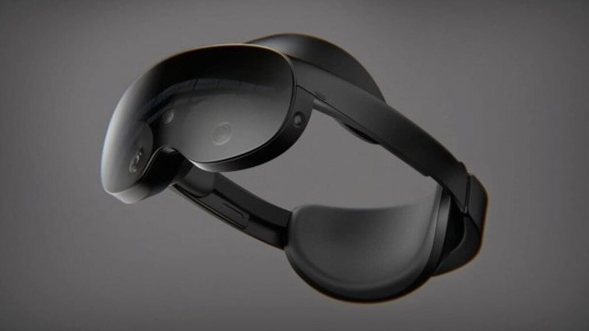

iOS VR Headset App එකෙහි Developer කෙනෙක් වන SteveMoser විසන් Meta සමාගම විසින් නව High-End VR Headset (Project Cambria ලෙසද හැඳින්වේ) එකක් එළිදැක්විමට කටයුතු කරමින් සිටින බව තහවරු කර තිබෙනවා. එය "Meta Quest Pro" ලෙස නම් කර ඇති බවද මොහු විසින් වැඩිදුරටත් දක්වා තිබෙනවා.
Meta Quest Pro VR Headset එක 2022 ඔක්තෝම්බර් 11 වන දින, 10 AM PT ට Meta Connect සම්මන්ත්රණය අතරතුර එළිදැක්විය හැකි අතර මෙම පුවත අප වෙත පැමිණෙන්නේ අන් කිසිවකුගෙන් නොව Meta ප්රධාන විධායක Mark Zuckerberg විසින්, ඔහු VR Headset එකක් පැළඳ සිටින රූපයක් "ඔක්තෝබර් 11 වන දින Meta Connect හිදී හමුවෙමු" යන Caption එක සමඟ Facebook හි පළ කළ තිබුනි.

Meta Quest Pro සඳහා මිල තවමත් තහවුරු කර නැති නමුත් Zuckerberg පවසන්නෙ, එය සදහා Oculus Quest 2 ට වඩා වැඩි මුදලක් වැය වනු ඇති බවයි.
Meta Quest Pro හි වඩාත් Exciting feature එක වනුයේ Eye and Face Tracking Technology එක වන අතර Headset එකට ඔබ සොයන්නේ කොතැනදැයි හඳුනා ගැනීමට හැකි වනු ඇත. එබැවින් ඔබට Mouse Pointer එක වෙනුවට ඔබේ බැල්ම භාවිත කිරීමට හැකි වනු ඇත.
තවද Face Tracking Feature එකෙන් Headset එකට ඔබේ මුහුණේ ඉරියව් තීරණය කිරීමට හැකි බව Zuckerberg තහවුරු කර තිබෙනවා. එබැවින් ඔබේ Avatar එකට ඔබේ මුහුණේ ඇති රැලි සහ සිනහව අනුකරණය කිරීමට හැකි වේ.
Meta සාමාන්යයෙන් ඔක්තෝබර් මාසයේදී නව Headsets සහ Related Apps නිකුත් කරන බැවින්, මේ නව VR Headset එක පිළිබඳ වැඩි විස්තර ඉක්මනින් දැකීමට අපි බලාපොරොත්තු වෙමු.
Sources: theverge.com , techcrunch.com , bbc.com
News